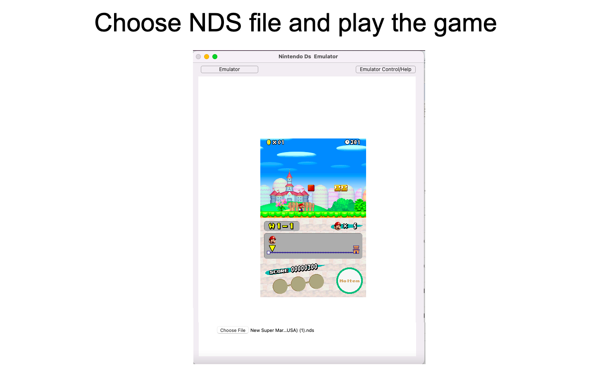
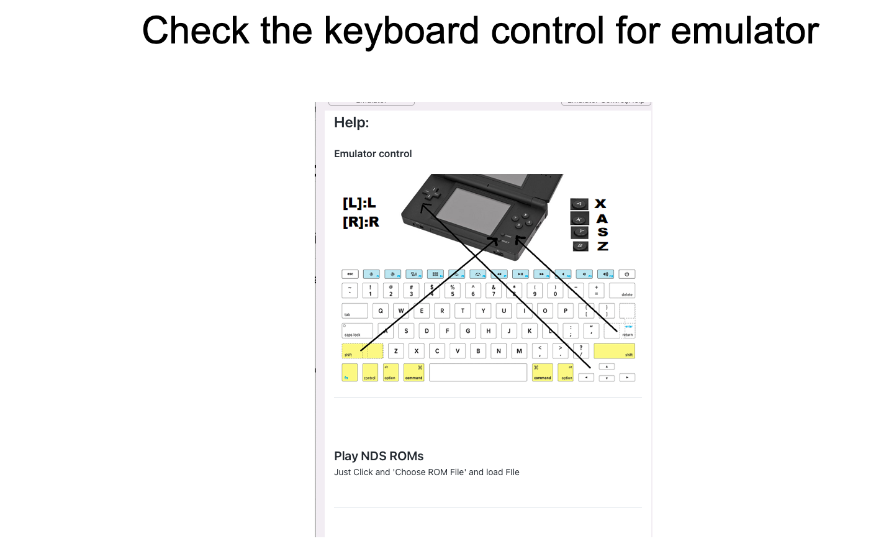

Help:
NDS Emulator
Choose NDS rom file to play the game

Control method to play game

FAQ:
Do you need an internet connection for this app to run?
You need to have an internet connection for this app, because all streaming data from game is coming from internet.
Support email: robotcomp0826@gmail.com